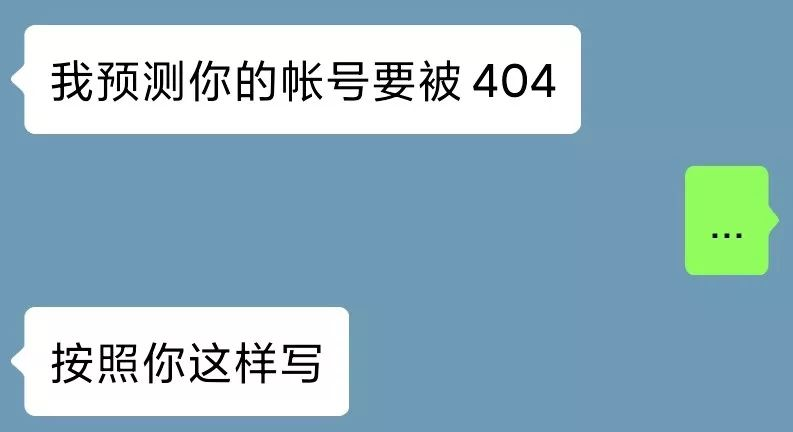

我的头我爱剃不剃
原文链接 备份链接 2020年2月17日。 农历正月廿四。 武汉封城第廿六天。 天门封城第廿五天。 顶着中午的艳阳，伯伯帮我把头发推了。我自己对着镜子，把胡子也剃了。蓄到肉眼可见，还真是人生头二回。然后冲了个澡，舒舒服服。剃刀是爸爸拿来 …

2020年2月20日。
农历正月廿七。
武汉封城第廿九天。
天门封城第廿八天。
不用再回复了啊，昨天前天两篇都没了。尸骨无存。我再三声明无力吐槽，也怕自己掉进非吐这种槽才能有所表达的陷阱，其实更怕这号没了。没备小号，这号没了我就傻逼了。用七年的微博被封，已重伤我。这号四年光阴作品，我的身家性命。自认没有李大眼五四兄妙笔，转个世换个号依然洛阳纸贵；也没有方方邓安庆才华，每天封城日记写得有口皆碑。我这纯属无聊敷衍，承蒙各位看官抬爱了。
中午眯了会，被晒醒。并无春梦，也无他想，而下体肿胀。阳光如白雪铺在被子上，空气中细腻的灰尘在跳动，时光仿佛凝固了一样。突然就陷入一种很奇妙的情境：勃起状态下的贤者模式。这项生理反应超出大脑神经调节范畴，大脑一筹莫展无所适从，开始胡思乱想。首先勃起已然成为性的象征，对性的立场决定了对勃起的态度；再则勃起并无痛感，于是男性占到便宜无法感同身受女性的生理之痛；这两种人类客观的生理反应，因为主观的偏见和弊垢，失去了和吃饭睡觉同等讨论的环境。我希望有一天，我们不再为公开讨论勃起月经而感到羞愧难当，提心吊胆。
春天来了，借陈丹青的一段话祝福大家：“诸位有情人，或者单相思的，或者闷骚的，胆大点，趁着春天，找自己的配偶，跟一条猪狗一样，别害臊，咱们都是动物。”


水妈
长按二维码向我转账
受苹果公司新规定影响，微信 iOS 版的赞赏功能被关闭，可通过二维码转账支持公众号。
原文链接 备份链接 2020年2月17日。 农历正月廿四。 武汉封城第廿六天。 天门封城第廿五天。 顶着中午的艳阳，伯伯帮我把头发推了。我自己对着镜子，把胡子也剃了。蓄到肉眼可见，还真是人生头二回。然后冲了个澡，舒舒服服。剃刀是爸爸拿来 …
原文链接 备份链接 2020年2月16日。 农历正月廿三。 武汉封城第廿五天。 天门封城第廿四天。 今天阳光好到足以让人忘记昨天的雪。一旦化成水，被阳光蒸发，曾经“为雪白头”的世界又恢复了它寻常的模样。受制感观，人真的很难在叵测变化的世界 …
原文链接 备份链接 2020年2月13日。 农历正月二十。 武汉封城第廿二天。 天门封城第廿一天。 噩梦中醒来，天还没亮。想爬起来写点什么，环顾四周，却一阵哆嗦。有一种很空茫、无助、虚弱、恐惧混合的感觉。除了小时候经常会有，青春期后就只 …
原文链接 备份链接 2020年2月12日。 农历正月十九。 武汉封城第廿一天。 天门封城第二十天。 今早没敢发给你看的，就是这个视频。——可别怪我咯，谁让他们这时候放出来。要我说，陈导团队也万万没料到，这年头居然会灾到连一顿像样的火锅都 …
原文链接 备份链接 2020年2月9日。 农历正月十六。 武汉封城第十八天。 天门封城第十七天。 今天居然没有被社区宣传疫情的大喇叭吵醒，一觉安稳睡到了10点半。而我的床丝毫没有想放我走的意思。只好翻身，背对阳光，摸出手机。并不饿，却非常 …